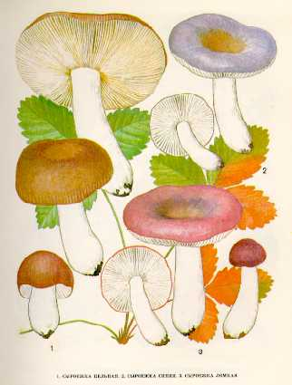

1.СЫРОЕЖКА ЦЕЛЬНАЯ
Встречается редко в лиственных и хвойных лесах, растет небольшими
группами с июля по сентябрь.
Шляпка до 12 см в диаметре, сначала полушаровидная,
потом становится распростертой, в центре вдавленная, красно-бурая,
буровато-желтая, выцветающая до белой, по краю розоватая, полосатая.
Кожица сдирается до половины. Мякоть белая, плотная, слегка острого
вкуса.
Пластинки сначала белые, у зрелых грибов кремовые или
охряные. Споровый порошок светло-охряный.
Ножка до 10 см длины, 2-3 см толщины, белая, гладкая.
Гриб съедобен, третьей категории.
Употребляется вареным и соленым.
2.СЫРОЕЖКА СИНЯЯ
Встречается в еловых лесах. Появляется в августе -
сентябре. Растет обычно группами.
Шляпка до 8 см в диаметре, мясистая, сначала
выпуклая, потом становится плоской, вдавленная в середине, синяя,
сине-лиловая, в центре темная, а по краю светлее. Кожица от шляпки
отделяется легко. Мякоть белая, сравнительно крепкая, без запаха.
Пластинки белые, прямые, многие из них разветвленные.
Споровый порошок белый.
Ножка до 5 см длины, 1-2 см толщины, белая, у молодых
грибов сплошная, у старых полая.
Съедобен, третьей категории. Очень вкусный гриб. Употребляется вареным и соленым.
3. СЫРОЕЖКА ЛОМКАЯ.
Селится во влажных лесах с
примесью березы, у опушек, среди
кустарников. Растет группами с августа до
октября.
Шляпка до 7 см в диаметре,
плосковыпуклая, в середине слабовдавленная,
с бугорком, темно-красная, в центре
синевато-зеленая, к старости выцветающая. Кожица
гладкая, легко отделяется от краев к центру.
Мякоть очень нежная, хрупкая, белая. Вкус
жгуче-едкий, запах приятный. Пластинки приросшие к ножке,
белые, узкие, частые. Споровый порошок
белый. Споры округлые, бородавчатые.
Ножка длиной до 5 см, 1
см толщины, белая или розовая, у основания вздутая.
Гриб
условно съедобен, четвертой категории.
Употребляется только соленым.